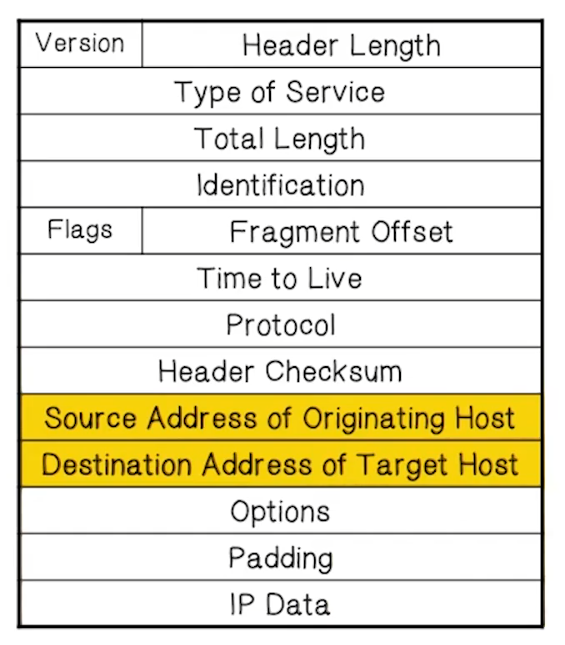
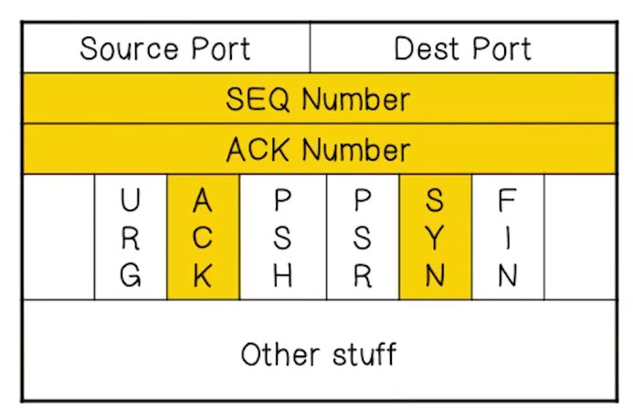
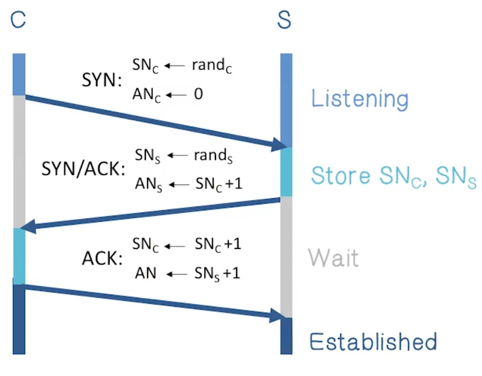
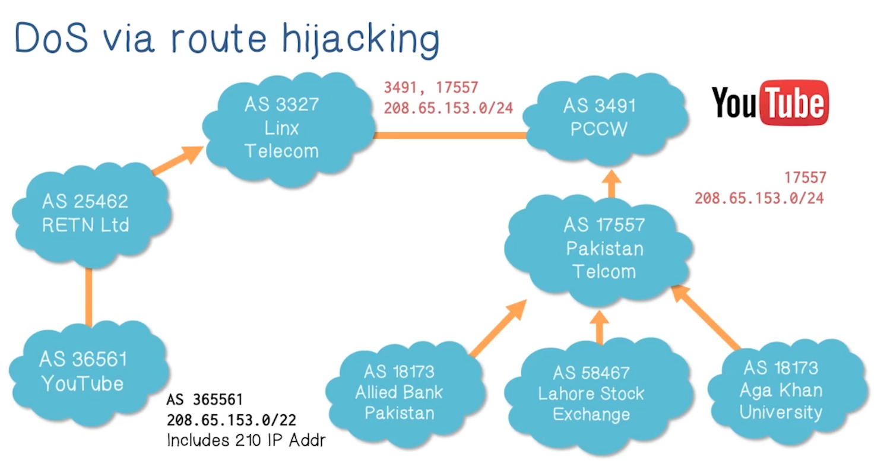
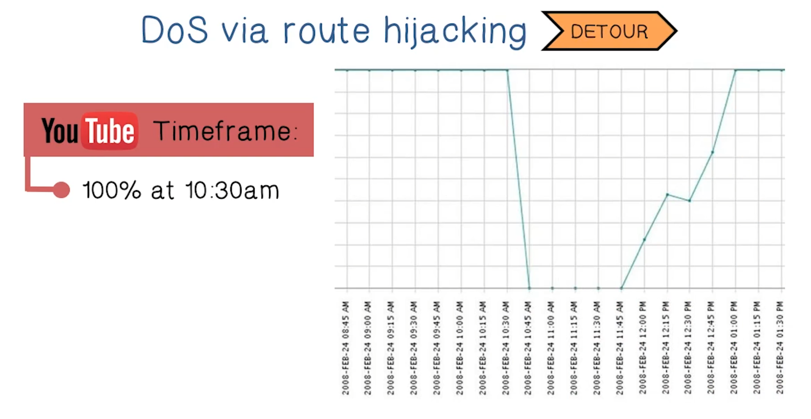
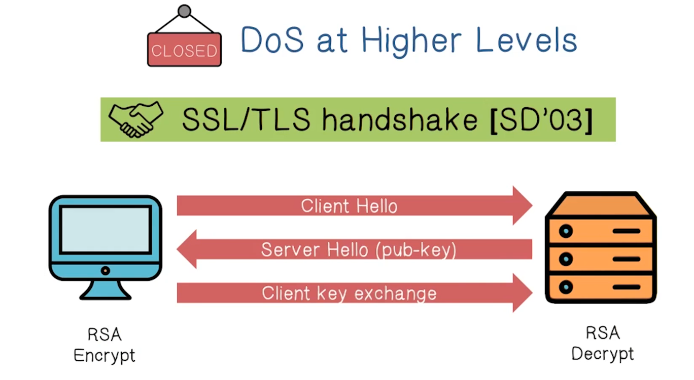
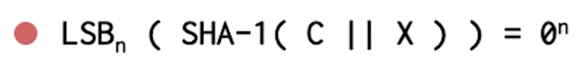
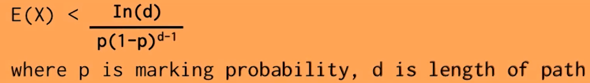

NetSec Lecture Notes - Lesson 2 - DDoS Attacks
DDoS Attacks
- Distributed Denial of Service
DOS Taxonomy Quiz One
- A portion of a list of targets is supplied to a compromised computer
- Hitlist scanning
- All compromised computers share a common psuedo-random permutation of the IP address space
- Permutation scanning
- Uses the communication patterns of the compromised computer to find a new target
- Signpost scanning
- Each compromised computer probes random addresses
- Random scanning
DOS Taxonomy Quiz Two
- Generate 32-bit numbers and stamp packets with them
- Random spoofing
- Generate random addresses within a given space
- Subnet spoofing
- The spoofed address is the address of the target
- Fixed spoofing
DOS Taxonomy Quiz Three
- The motivation of this attack is a crucial service of a global internet operation, for example core router
- Infrastructure
- The attack is targeted to a specific application on a server
- Server application
- The attack is used to overlaod or crash the communication mechanism of a network
- Network Access
Network DoS
- Goal is to take out a large site with little as little computing power as possible
- How is this accomplished?
- Amplification
- Small number of packets to accomplish a big effect
- Two types
- DoS bug – design flaw allowing one machine to disrupt a service
- DoS flood – command botnet to generate a flood of requests
- DoS can happen at any layer
- Example at Link layer
- just send a lot of traffic to saturate link
- Example at TCP/UDP transport layer
- Server needs to use memory to hold state about TCP connections. Run the server OOM with too many such connections
- Example at application layer
- attacker can request the application to fetch large amounts of data, exhausting the server’s resources
- Example at Link layer
- Sad truth: current internet is not designed to handle DDoS attacks
Amplification Quiz
- NTP server used to sync time and date. Data volume of request is much smaller than the response.
- In general, any situation where small requests generate large resposnes is vulnerable to amplification attacks
- A notable case study is open DNS resolvers
- Additionally, UDP is vulnerable to source IP spoofing, meaning that the large response can be aimed at any victim address desired
- It is difficult to ensure computers communicate only with legitimate NTP servers, making filtering difficult
Amplification Example
- Scale of amplification attacks determined by two factors.
- Number of bots sending bogus requests
- Amplification ratio of response/request sizes
- Example given of open DNS resolvers
IP Header Format

- IP is connectionless, and unreliable
- Each packet will find its way to destination, but no mechanism to ensure they all do, nor in order. Best effort
- Main weakness of IP from a security perspective is that there’s no authentication of the source IP address. This allows spoofing of source addresses
TCP Header Format

- Session based
- Destination will check that all packets have arrived and are in order
- Also offers congestion control
- Minimizes packet loss
- SEQ and ACK numbers used for keeping track of order, flags used for state
TCP Handshake

TCP SYN Flood
Low Rate – DoS Bug
- In TCP handshake, server needs to keep memory in state while waiting for ack
- Attacker can spoof source IP address, even from single machine
- Fills up backlog queue on server
- No further connections possible
- Example given is blaster worm from 2003
- Attacked windowsupdate.com, 50 SYN packets per second
- MS just issued a new name
- Non-solutions:
- increase backlog queue size or decrease timeout
- attacker can just send more packets, bad solution
- Correct solution – syncookies: remove state from server
SYN Cookies Quiz
- SYN cookies require modified versions of TCP
- FALSE
- SYN cookies lead to overall slower performance
- FALSE
- The server must reject all TCP options because the server discards the SYN queue entry
- TRUE
Massive Flood – DDoS
- Command bot army to flood specific target
- 20,000 bots can generate 2Gb/sec of SYNs (2003)
- At web site:
- Saturates network uplink or network router
- Random source IP -> attack SYNs look the same as real SYNs
- Hard to filter
- How do we defend against this?
- Prolexic/Cloudflare
- One idea is to use powerful servers to protect a website. These will only forward established TCP connections to site
- These proxies will handle SYNs and respond with SYN/ACKs
- When proxy receives ACK, then forward to actual website
- Attackers will not send ACK, so only normal traffic is serviced
- This isn’t bulletproof
- Attacker can send complete TCP connections, from botnets
- Send short HTTP HEAD request
- Repeat
- All these requests are “legitimate” from a protocol point of view
- Similar to “real” spikes in traffic volume
- This will bypass SYN flood protection proxy BUT attacker can no longer use random source IPs
- This reveals the location of bot zombies
- The proxy can now block or rate-limit the bots
- Example given of second kind of attack is GitHub DDoS from 2015
- Involved interesting embedding of malicious html from a popular server
- The JS instructed the user’s computer, once infected, to attack GitHub.com
Flood Attack Quiz
- Attackers can spoof the IP Address of their UDP packets
- TRUE
- The attack can be mitigated using firewalls
- FALSE
- Firewalls cannot stop a flood because the firewall is susceptible to flooding
- TRUE
DoS via Route Hijacking
- The IP protocol itself can be used to launch DoS attacks
- Example given below:
- The gist is that just announcing a more specific prefix will tell the whole internet to send request for an IP address in that range to you instead of the rightful owner
 
DoS at Higher Levels
SSL/TLS Handshake (SD’03)

- RSA decrypt is much more expensive than RSA encrypt. The server does way more work on that third leg than the client has to do in total
- This represents amplification, and so is the basis for a possible attack
- Simply sending fetch requests for very large resources, such as a large .pdf file, can also accomplish DoS in this way.
DoS Mitigation - Client puzzles
- Goal is to slow down the attacker
- Done by giving them a moderately hard problem
- e.g. Given challenge C find X such that…
- 
- Assumption: takes expected 2^n time to solve
- For n=16 takes about .3sec on 1Ghz machine
- Main point is that checking the puzzle solution is easy, repairing the disparity in workload between client and server, reducing amplification threat surface
- e.g. Given challenge C find X such that…
- During DoS attack everyone must submit puzzle solution with requests
- When no attack, do not require puzzle solution
- Examples
- TCP connection floods (RSA ‘99):
- Example challenge
C = TCP server-seq-num - First data packet must contain puzzle solution
- Otherwise TCP connection is closed
- Example challenge
- SSL handshake DoS (SD’03):
- Challenge C based on TLS session ID
- Server: check puzzle solution before even attempting to do the RSA decrypt
- Similar ideas can be applied to application layer, or payment systems
- TCP connection floods (RSA ‘99):
- Benefits
- Hardness of challenge can be decided based on DoS attack volume
- Limitations
- Requires changes to both clients and servers
- Hurts low power legitimate clients during attack
- Possibly, clients on cell phones and tablets cannot even connect
DoS Mitigation - Client Puzzles: Memory-Bound Functions
- CPU power ratio:
- (high end server)/(low end cell phone) = 8000
- Impossible to scale to hard puzzles
- Interesting observation:
- Main memory access time ratio:
- (high end server)/(low end cell phone) = 2
- Main memory access time ratio:
- Solution requires many main memory accesses
- Reading provided in class notes
Puzzle Quiz
- Client puzzles should be hard to construct. This is an indication of the level of difficulty to solve them.
- FALSE
- Client puzzles should be stateless.
- TRUE
- Puzzle complexity should increase as the strength of the attack increases.
- TRUE
DoS Mitigation - CAPTCHAs
- CAPTCHA: Completely Automated Public Turing test to tell Computers and Humans Apart
- Idea is to verify that the connection is from a human
- Applies to application layer DDoS
- During attack, generate CAPTCHAs and process request only if valid solution
DoS Mitigation - Source Identification
- Goal is to identify the packet source
- To block the attack at the source (ingress filtering)
- Harder than it sounds
- ISP is often unable to help
- Problem is it requires ALL ISPs to do this, which requires global trust
- If even 10% of ISPs don’t participate, this provides functionally no defense
- There is no incentive for the ISP to participate
- As of 2014
- 25% of Autonomous Systems are fully spoofable
- 13% of announced IP address space is spoofable
DoS Mitigation - Traceback
- Given a set of attack packets, determine path to source
- Done by changing routers to record this information in packets
- Assumptions:
- Most routers remain uncompromised (so that this information is valid)
- Attacker sends many packets
- Route from attacker to victim remains relatively stable
- Simple method
- Have each router write its own IP address to packet
- Victim reads path from packet
- Problems:
- this requires space in the packet
- The path can be very long
- There are no extra fields in the current IP format
- Changes to packet format are not practical to expect
- this requires space in the packet
- Better method
- DDoS involved many packets on the same path
- Store one link in each packet
- Each router probabilistically stores its own address in the packet
- This results in fixed space regardless of path length
Traceback Quiz
- Attackers can generate limited types of packets
- FALSE
- Attackers may work alone or in groups
- TRUE
- Attackers are not aware of the tracing mechanism
- FALSE
Traceback Mechanism – Edge Sampling
- Main component is the edge sampling algorithm
- Edge is the start and end IP addresses
- Distance is the number of hops since last time edge was stored
- Marking procedure for router R
- when packet arrives, toss a coin
- if coin turns up heads (with probability p) then:
- write R into start address
- write 0 into distance field
- if coin turns up tails
- if distance == 0 then write R into end field
- increment distance field
- Example
- Packet received at R1 from source or another router
- Packet slated to travel through 3 routers, R1, R2, and R3
- R1 tosses coin, gets heads, chooses to write start of edge
- R2 tosses coin, gets tails, chooses not to overwrite edge
- Distance is 0, so R2 writes itself to end address, increments distance to 1
- R3 tosses coin, gets tails, chooses not to overwrite edge
- Distance is 1, so it does not write itself as end address, increments distance to 2
- With edge information, we can now reconstruct the packets path
- Extract information from attack packets
- Build graph rooted at victim
- Each (start, end, distance) tuple provides an edge
- expected number of packets needed to reconstruct path can be probabilistically given by formula:
- 
Edge Sampling Quiz
- Multiple attackers can be identified since edge identifies splits in reverse paths
- TRUE
- It is difficult for victims to reconstruct a path to the attacker
- FALSE
- Requires space in the IP packet header
- TRUE
Reflector Attack
- Attacker spoofs Victim’s IP and sends DNS query to many DNS servers
- All DNS servers respond to the DNS query and send data to victim’s IP
- Victim is flooded by all of the data sent from the DNS servers
- Examples
- DNS Resolvers: UDP 53 with victim.com source
- At victim: DNS response
- Web servers: TCP SYN 80 with victim.com source
- At victim: TCP SYN ACK packet
- Gnutella servers
- DNS Resolvers: UDP 53 with victim.com source
- Typically launched by a botmaster, commanding many bots
- Reflectors send streams of non-spoofed but unsolicited traffic to victim
- There is no traceback information kept by the reflectors, to allow the victim to know the sources of the attack
Reflector Attack Quiz
- Self defense against reflector attacks should incorporate:
- Filtering - filter DNS traffic as close to the victim as possible
- FALSE
- Server redundancy - servers should be located in multiple networks and locations
- TRUE
- Traffic limiting - traffic from a name server should be limited to reasonable thresholds
- TRUE
Capability-Based Defense (Theoretical)
- A number of examples available, papers linked
- Basic idea is that the receivers can specify what packets they want
- How?
- Sender requests capability in SYN packet
- Path identifier used to limit number of requests from one source
- Receiver responds with capabiltiy
- Main point is that Routers will only forward request packets, and packets with valid capability
- Capabilities can be revoked if source is attacking
- Blocks attack packets close to source